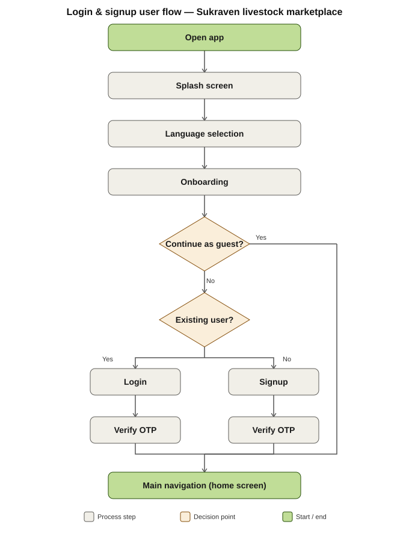
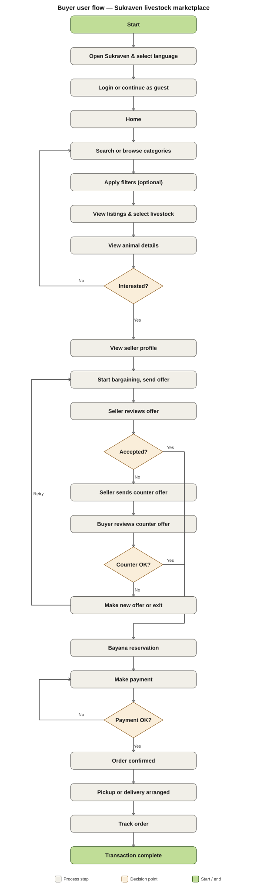
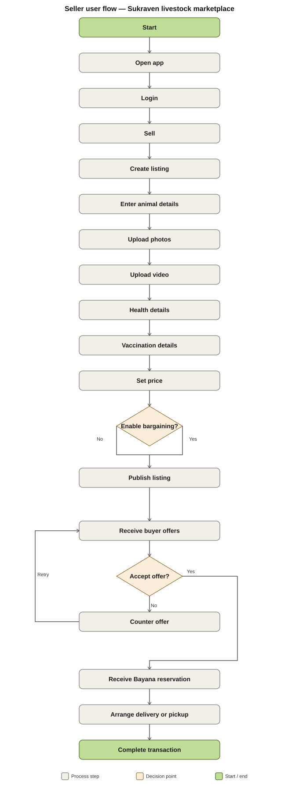
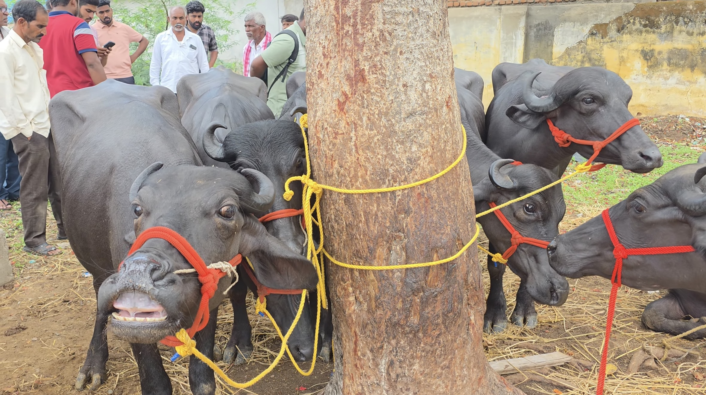
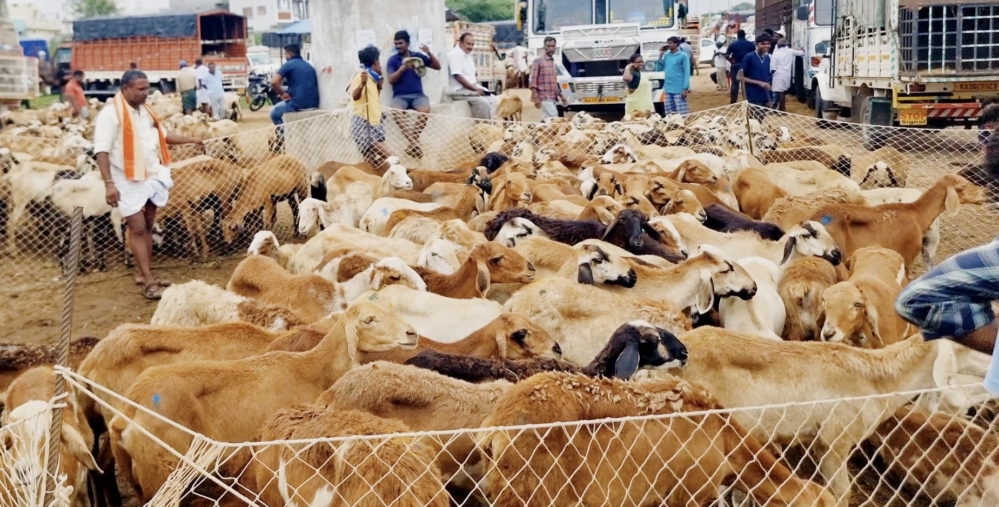
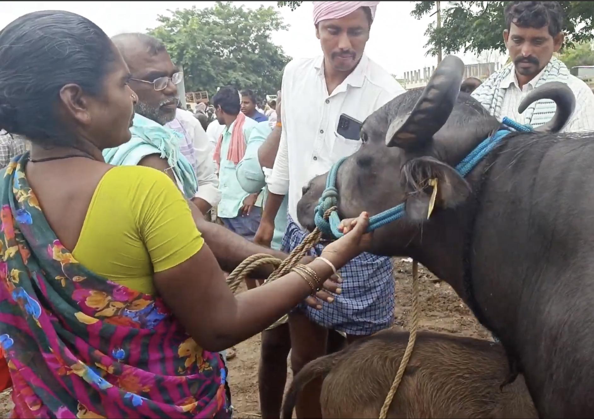
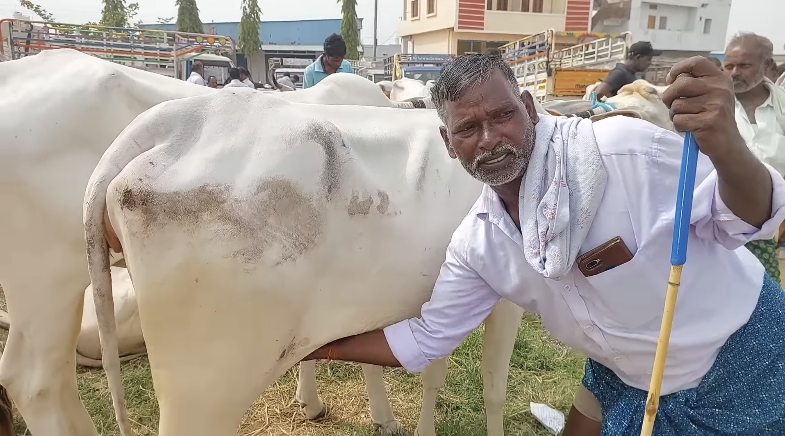
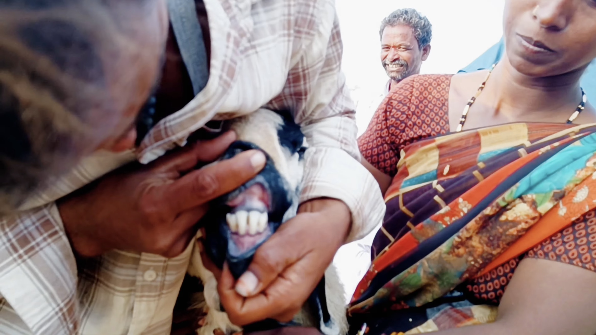
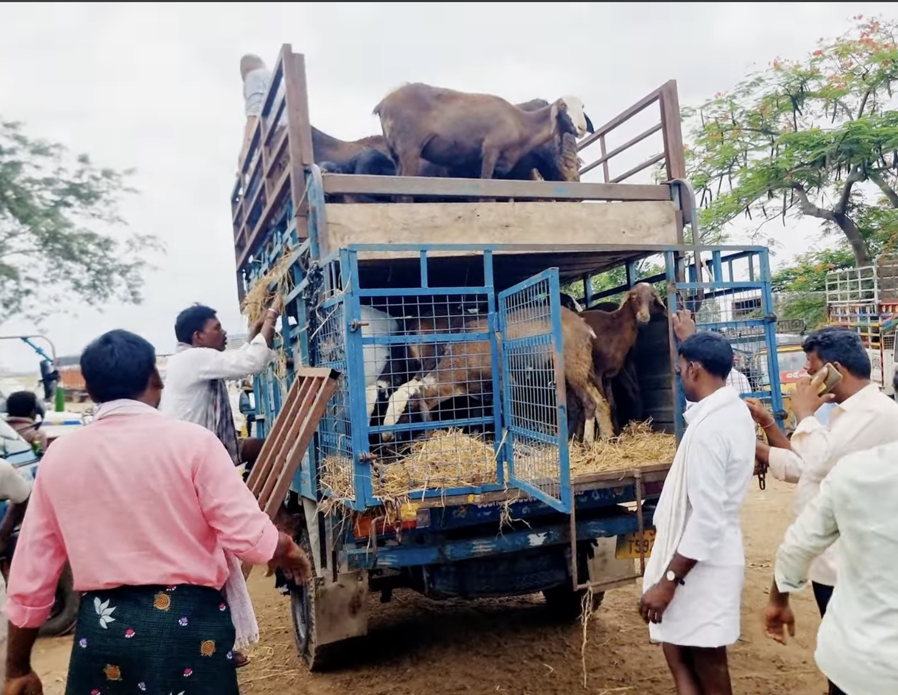

M.Des Thesis Case Study

Reimagining livestock trade for a digital-first market.
Sukraven translates traditional santha workflows into a trusted, elegant product journey—from discovery and bargaining to payment, delivery, and tracking.
Project Overview
Built from field research and thesis-led systems thinking.
This single-page wireframe maps the thesis narrative into an Apple-style storytelling sequence using repository assets as the visual source of truth.
Problem Statement
Livestock trading is high-touch, fragmented, and trust-dependent.
Buyers and sellers rely on physically intensive market visits, manual price discovery, and opaque negotiation paths. The thesis explores how a mobile interface can preserve human bargaining while reducing friction.
 Layout.png)
Research + Field Study
Grounded in real market behaviors and spatial rhythms.


Design Principles
Trust. Clarity. Speed. Inclusivity.


Information Architecture
A complete structural map of the livestock exchange journey.

User Flows
Parallel journeys for onboarding, buyers, and sellers.



Onboarding + Home
Immediate, language-aware entry into the product ecosystem.


Discovery
Browse livestock with visual clarity and actionable metadata.
Listing and browsing screens are designed for quick comparisons and informed filtering before negotiation.


Detail View
Every decision-critical detail in one frame.
Age, breed, health, vaccination, weight, and milk attributes are surfaced for confident decision-making.


Bargaining Experience
Digital negotiation that preserves market culture.


Payment + Delivery
From bayana to tracking, the handoff stays visible and trusted.


Seller Dashboard
Control center for listings, responses, and deal management.
 Sell
Sell
 Buy
Buy
 My Livestock
My Livestock
 Verified Seller
Verified Seller
 Delivery
Delivery
 Distance
Distance


Motion Reel
Scroll-driven media rhythm, inspired by Apple product storytelling.
Field Gallery
Real environments that shaped the interface decisions.






Impact
A modern digital layer over a traditional trading ecosystem.
- Clearer discovery with structured livestock metadata.
- Transparent buyer-seller bargaining touchpoints.
- Traceable payment, delivery, and transaction closure.
- Operational confidence through seller dashboard controls.

Sukraven brings trust, speed, and dignity to livestock commerce.
Case study structure and media are derived from repository assets and the thesis document.